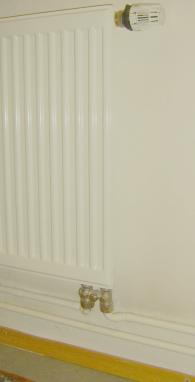
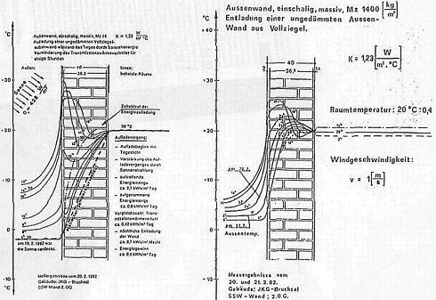

Konrad Fischer's Homepage: Restoration, Preservation and Refurbishing of the Old Building and Patrimonial Monument
Konrad Fischer's Homepage: Restoration, Preservation and Refurbishing of the Old Building and Patrimonial Monument  Restoration of old buildings, conservation of monuments - Tips and Tricks +++ Mold attack - What to do? A Guide
Restoration of old buildings, conservation of monuments - Tips and Tricks +++ Mold attack - What to do? A Guide  Traditional Craftmanship in Modern Mortars – Does it work in practice?
Traditional Craftmanship in Modern Mortars – Does it work in practice? 





The incoming short wave light rays will be absorbed from the lighted materials and reemitted as long wave IR-radiation. So the directly and diffusivly incoming solar light is converted into heat. Good to know: Heat radiation can not and never penetrate a single window glass pane!

Electromagnetic waves and glass. A diagram of Professor Dr.-Ing. habil. Claus Meier: The simple glass pane of usual windows is
not permeable for the wavelengths of the shortwave UV radiation (< 0.3 µm) and longwave
electromagnetic IR radiation (infrared radiant heat > 2.7 µm). Only the visible light range will penetrate the
glass.
Note: The Rth-values/U-values (= "U") are not common with the changes of the temperature and the practical effect of the thermal insulation. The crazy joke: The experts of R-values define their results without any regard of the time and amount of heating energy in the proof before they start measuring. Heavy materials suck up and store huge amounts of energy. Therefore they can lose much more energy than air filled insulation. Likewise such experts could compare the losses of water of a filled lake with a filled pint. They neglect the free daily energy radiation outside the building from the sun and the surroundings in their dark laboratory and soul too. So they forget the creeks and rivers, which fill up the storable lake again and again. Think about it, then you will detect the unbelievable deceit even if you are no doctor and only a normal stupid guy and moron like me. All is done by a big conspiracy against your wallet since many years: the insulation industries, the producers of prefabricated houses and their 'scientific', planning and working staff - maybe also your craftsmen, architects and civil engineers - get your money for their shit.
Surprised? Please don't believe me, have only a look to all the examples here for drunken insulation & thermal imaging scam and proof the language skills of your school time or your automatical translator by clicking this link to the best german invention ever made (2009, patent 2011): The Two Possible Heating Systems for thermal insulated (ETICS) fronts / facades to hinder destruction by condensate. And please don't die lauging ... ;-) Conclusion: To save energy, we must first of all consider and improve the heat system and distribution - without any hermetically sealing our living rooms. The standard error relying building physics, false heating, thermal insulation and sealing our houses to proper breeding places for all sorts of mold, mildew and other air polluting micro-organism, wasting energy and making people and materials sick by bad indoor conditions must be finished. The need for better solutions is apparently necessary.
Eggenbach Baroque half timbered house in Eggenbach No. 2/3 - Complete conservation and heat radiation system with base board heating 1990
Castle cellar in the Palas of the castle Burgthann (Burgthann (Roads to ruins) <> Burgthann (association of castle's friends)),

The Neuenburg castle
 Gallery wing, double chapel and restaurant of Neuenburg Castle near Freyburg/Unstrut (the Neuenburg castle in Roads of ruins,
(photo Ed Kane 2000: Konrad Fischer with the draft of Neuenburg castle), <> Neuenburg
official site <> Neuenburg castle (DBV))
Gallery wing, double chapel and restaurant of Neuenburg Castle near Freyburg/Unstrut (the Neuenburg castle in Roads of ruins,
(photo Ed Kane 2000: Konrad Fischer with the draft of Neuenburg castle), <> Neuenburg
official site <> Neuenburg castle (DBV))
Former synagogue in Odenbach, Rhineland-Palatine,
- keeping at a moderate temperature for conservatorical purpose
Barn and stable in the Hennebergisches Museum Kloster Veßra,
Temperating for conservatorical purpose
Gustav-Adolf-Museum in Geleitshaus Weißenfels Temperating heating system for the museum, restaurant, living rooms, seminar rooms
Zeyern, former farm house, now dwelling house of family Kaiser,
a blog- and half timbered construction
Further since 2001 approx. 25 radiation heating systems for buildings from different epochs until today in
Bavaria, Baden-Wuerttemberg, Berlin, Brandenburg, Hamburg, Hessen,
Lower Saxony, North Rhine-Westphalia, Rheinland-Pfalz, Saxonia,
Saxonia-Anhalt, Schleswig-Holstein and Thuringia.
One of the last: The prince bishop's summer resort Veitshoechheim
Castle (planning and execution 2001-04, for details look the final report below.) www.wuerzburg-photos.de - Veitshoechheim Castle and Garden - Photos
From the provisional final report - summary (act. Version 10/07):
| Lecture reader / handout (updated) for: - Technical building equipment in the architectural monument Conference of the adviser for monument preservation of 'The German Castles Association for the Preservation of Historic Buildings' (Deutsche Burgenvereinigung DBV e.V:). Wuerzburg, fortress Marienberg, 31.01. - 01.02.2004 - Study day for preservation and restoration Care of monuments and monument use The architectural monument and its equipment in the area of conflict between preservation and use Training further center of the FH Erfurt, 25.06.2004 - Room envelope and technology in the architectural monument Annual convention of the skilled work circle of castles and gardens in Germany Bayreuth, Neues Schloss, 02. - 04.04.2006 Konrad Fischer The castle Veitshoechheim
had been built 1680 to 1682 as a summer resort for the prince bishop Peter
Philipp von Dernbach of Wuerzburg of architect Heinrich Zimmer, perhaps after plans of Antonio
Petrini. Under prince bishop Karl Philipp of Greiffenclau the castle had been extended with living rooms / apartments
by architect Balthasar Neumann 1749 to 1753 adding transverse buildings at the narrow sides.
From 1752 to 1753 Antonio Bossi created the rich stucco works at the ceilings and walls in the upper floor.
In 1810 some rooms got furnished for the habsburgian Grand Duke Ferdinand of Toskana. The
high-quality of room equipment and the castle's importance had been improved with rare wall papers.
The castle is used only seasonally and in the winter closed for visitors. The climatic measurements before the project start proofed, that weather and use-conditioned moistening and wide range variations of the seasonally temperature change brought huge amounts of condensation of damp warm air in the cooler walls especially in spring time. The harmful hygrothermal fluctuations caused substantial damage to the solid building construction (dry rot, corrosion) and the high-quality mobile and wall-fixed equipment (black mold / mildew /fungal growth on the organic wall papers, deterioration of water absorbing wooden, textile and organically coated surfaces, losing binder in the detached or disintegrated historic paint layers, mobilizing of salts in mineralic parts of the wall like render and natural stone. In the stucco parts and all external walls cracks and hollow aereas had been caused by moisture and temperatur stress). The long termed comparative measurement of the external and internal air temperatures and indoor climate proofed f.e. in March 2001 higher outside temperatures up to 13 K. In January I measured with my IR-Thermometer 0 °C on the internal wall surfaces of the first floor. So condensate storage into the undercooled internal areas and temperature stress in all parts of the building construction had been unavoidable. The long term degradation of the building envelope components is correlated with the outdoor climate and contradicting all efforts of maintenance and building repair.
The governmental building office Wuerzburg and the Bavarian castle administration decided in view of the
climatically caused dampness damage to conservational counter measures: In connection with the restoration of the room
envelopes / shells and use-conditioned changes I got charged with engineering for the installation of a climate
stabilizing and temperating room envelope heating system. Dampness from air can condense only at colder, not at warmer surface. To that extent all air heating systems and likewise over air heating working convectionally heating systems (convector heating, baseboard heating) work not only as dust centrifuges, but also as humidification mechanisms with senselessly wasteful heating energy consumption. For museums, historically valuable equipped rooms and damp-sensitive building constructions and inventories offers the room envelope heating based on radiant heat unbeatable advantages. Both in conservational and in economical sense regarding the operating cost.
Also during the computation and planning of the heating system we calculated in accordance with the governmental building service department quite differently, than by the standard procedure. Our heat requirement calculation regarded the local yearly temperature curve (not the average for whole Germany) and by the arithmetic procedures with the Reff-values of Professor Claus Meier, which considers the solar absorption and heat storage capability of the solid building materials in relation to the local solar radiation which can be found exactly in Veitshoechheim in the yearly process. Together with the economically advantages of the wall envelope heating the ventilation heat losses could be reduced substantially. The initial values of the heat conduction coefficients for the historical structures were inferred from the technical standard quality specifications and terms of the TGL 35424/02 (a building regulation of the former German Democratic Republik), since the new building-oriented DIN 4108 supplies no values. The alternative computation improves the R-value of a wall on the north side of 1,14 on 0,54, at the east and west side of 1,14 on 0,20 and on the south side of 1,14 up (minus!)-0.12 W/m²K. Some examples of the german building research shall illustrate the correctness of our controversial point of view:
In this case we did not take advantage of all possibilities that the real physics of radiation after Kirchhoff, Boltzmann and Planck as well as the results of practical building research would provide us, in order to find a safer working heating. Our planning contract has given us a big problem of responsibility, so some more safeguarding in such a big project is understandable. The differnce regarding technical equipment coservational protection and building investments to common planning is still huge enough. The calculated heat requirement had been so clearly more favorably, that a small combined heat and power unit CHP (12.5 KW) with a buffer in the vaulted celler is sufficient. The additionally peak load is supplied by the already existing calorific value gas boilers (24 KW) of the living apartment of the facility manager.
The warm water pipes in subordinated areas are installed openly, the base tubing cycles in the visitor range and
more important areas are installed under the wall render/plaster or as underfloor system. This was a compromise between esthetic postulations of the
responsible restorators, the interventions in the historic building and the efficiency of the heating system.
The areas with increased temperature requirements (office, guest toilets) got additional warm water-supplied radiant
panels (radiators).
As safeguard against water damage in the splendor areas of the upper floor the heating system had been carefully installed behind the panel, under the floor and on the stucco frame by electrical heating wires of small power output (20 W/m).
In wintertime mobile marble slab heat emitters of different size with a power output of 400 W to 1.500 W are in use. They are arranged in the center of the rooms and irradiate the room envelopes. The electric power of the combined heat and power unit CHP is used also for the electrical room envelope heating. The temporary surplus is fed in the electrical net in accordance with the power-heat-mixing law (KWK law).
Because of the pilot character of the project our client required an complex controlling of the heating technique and the monitoring of the room climate values. The energy consumption of the heating cycle components can be evaluated individually.
The heating energy consumption per square meter in the warm water-supplied ground floor is higher as in the the electrically heated upper floor. We suppose as a logically result of the plastered installation, which diminishes the radiation power likewise a shadowing board would do this for a light bulb or an umbrella against the sun light. So - burying the heating pipes in the building construction will convert and a powerful sun to a pale gloomy moon ;-) Annual consumption:
Referring to the temperature monitoring the minimum temperature level in the rooms had been at approx. 7 to 10 °C, even at lowest outside temperatures. This proofs the ideal interaction between the solid building construction and the room envelope heating technology. The additional calorific value gas boiler for load peaks had to contribute scarcely 4per cent to consumption. Thus the example Veitshoechheim proofs that this heating system can provide generally energy savings in castles, palaces and other historic buildings. In many monuments are the usual - technically and economically dubious or negative - energy saving measures such as the installation of thermal insulation on the facade or interior walls and the replacement of historic windows against modern insulated windows already excluded due to crucial conservational arguments. So the remaining energy-saving measures are limited on the heating system - and there they may also be particularly successful.
Altogether the room envelope heating system in
the castle Veitshoechheim can proof the positive effect of the tempering radiant
heat technology in the solid construction with single windows
from the conservatorically and energetically point of view. The
construction costses: Warm water heating system with the
combined heat and power unit CHP: 70,000 EUR, electrical heating: 35,000 EUR, control: 50,000 EUR. Hochstadt am Main, 15.10.2007 The restoration report of the Bavarian castle administration, BD Peter Seibert |
Fits also: Pdf scientific paper: Analysing indoor Climate in Building Heritage in Slovenia of Marjana Šijanec Zavrl, ZRMK, Technological Building and Civil Enginering Institute, Ljubljana, Slovenia. It is reported, how the gigantic condensation effects by summer air and concert use at the room envelopes in a historic castle and a church are measured. Proofs for the preserving effect (without any view of energy consumption - why probably?) of a room envelope heating system are given, although unfortunately installed under the plaster by acceptance the losses of original building substance and energetical efficiency. A scientific paper, however quite worth reading.


 .
.
 .
. 


 .
.


 .
.


 .
.


 .
.


 .
.